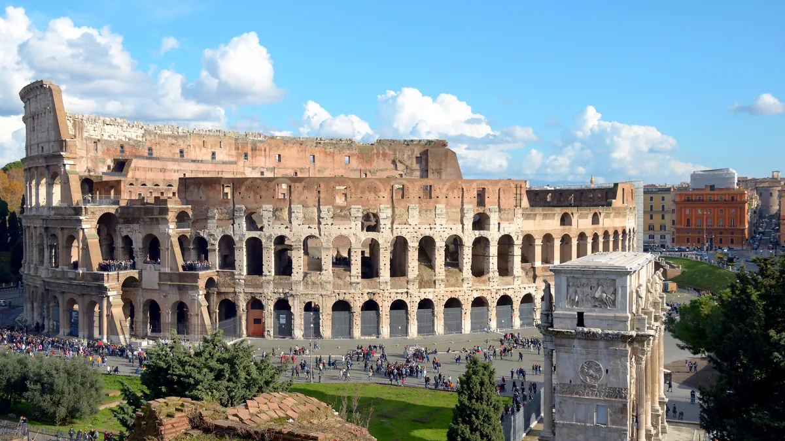

01
Coliseu, Fórum Romano e Palatino
Sítio arqueológico€ 18
um bilhete para os três, válido 24h

Livioandronico2013 · CC BY-SA 4.0 · via Wikimedia Commons
Valor da entrada
Inteira € 18, e um bilhete só cobre os três sítios — Coliseu, Fórum Romano e Palatino.
Vale 24 horas a partir da primeira picotada, então dá para ver o Coliseu num fim de tarde e o Fórum na manhã seguinte com o mesmo bilhete. É a validade mais generosa desta ficha.
A reserva de horário é obrigatória para entrar no Coliseu, e as vendas abrem 30 dias antes. O Fórum e o Palatino você visita sem hora marcada, antes ou depois.
A permanência dentro do Coliseu é limitada a 75 minutos.
E aqui está a armadilha para o leitor brasileiro: a meia-entrada de € 2 é só para cidadão da União Europeia de 18 a 24 anos. Brasileiro de vinte anos paga os € 18 cheios. Há ainda uma tarifa R.A.P. de € 14, para associados do parque.
Fonte: indexação do domínio do Parco archeologico del Colosseo, 29/set/2026. Site oficial não abriu colosseo.it e ticketing.colosseo.it recusaram conexão, e o navegador também foi negado no ticketing. Não contornamos bloqueio.
Vale 24 horas a partir da primeira picotada, então dá para ver o Coliseu num fim de tarde e o Fórum na manhã seguinte com o mesmo bilhete. É a validade mais generosa desta ficha.
A reserva de horário é obrigatória para entrar no Coliseu, e as vendas abrem 30 dias antes. O Fórum e o Palatino você visita sem hora marcada, antes ou depois.
A permanência dentro do Coliseu é limitada a 75 minutos.
E aqui está a armadilha para o leitor brasileiro: a meia-entrada de € 2 é só para cidadão da União Europeia de 18 a 24 anos. Brasileiro de vinte anos paga os € 18 cheios. Há ainda uma tarifa R.A.P. de € 14, para associados do parque.
Fonte: indexação do domínio do Parco archeologico del Colosseo, 29/set/2026. Site oficial não abriu colosseo.it e ticketing.colosseo.it recusaram conexão, e o navegador também foi negado no ticketing. Não contornamos bloqueio.
Dias em que não funciona
O Coliseu abre às 8h30 e a área do Fórum e Palatino às 9h.
É gratuito no primeiro domingo de cada mês, pelo programa Domenica al Museo, do Ministério da Cultura italiano — o percurso gratuito inclui os três sítios.
Mas grátis não quer dizer sem reserva: o próprio parque informa que os bilhetes gratuitos se reservam pelo site de bilheteria. Em domingo gratuito a procura é muito maior que a lotação, e sem bilhete na mão você não entra.
É gratuito no primeiro domingo de cada mês, pelo programa Domenica al Museo, do Ministério da Cultura italiano — o percurso gratuito inclui os três sítios.
Mas grátis não quer dizer sem reserva: o próprio parque informa que os bilhetes gratuitos se reservam pelo site de bilheteria. Em domingo gratuito a procura é muito maior que a lotação, e sem bilhete na mão você não entra.
Pontos de referência
O conjunto fica entre a Piazza del Colosseo e os Fori Imperiali, que são via pública e se veem de graça da calçada da Via dei Fori Imperiali. O Arco de Constantino está colado ao Coliseu, do lado de fora da bilheteria.
Ver no mapa
Ver no mapa